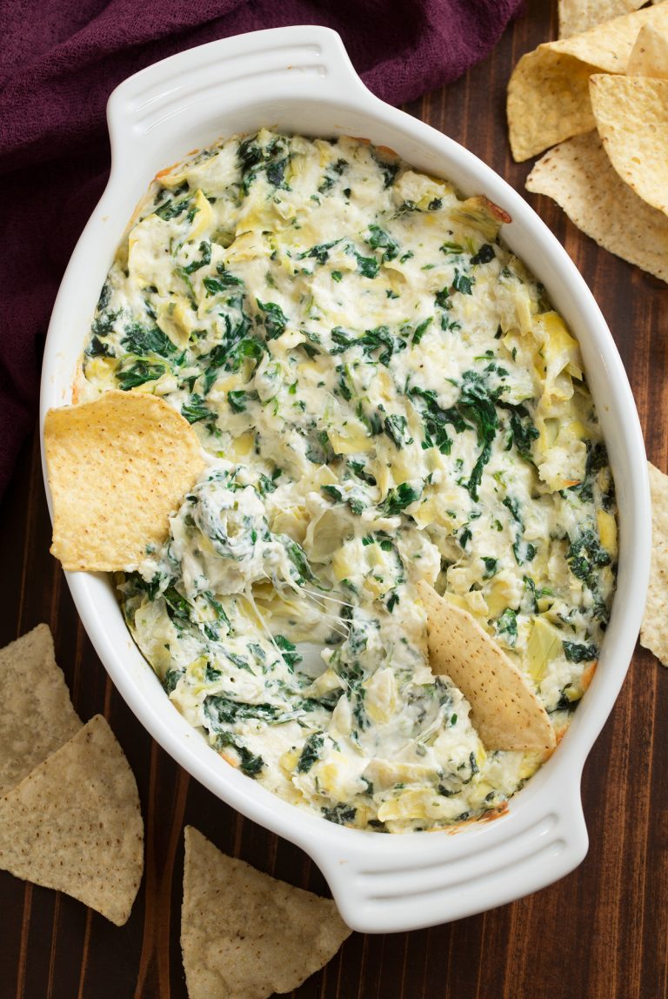

Spinach Artichoke Dip

Description
Creamy and cheesey. What's not to love?
- Cream cheese
- Sour cream
- Mayonnaise
- Garlic
- Parmesan
- Mozzarella
- Pepper
- Canned Artichokes
- Frozen Spinach
- Preheat oven to 350 degrees. Spray a small (4 – 5 cup) baking dish with non-stick cooking spray.
- In a mixing bowl stir together cream cheese, sour cream, mayonnaise, garlic, parmesan, mozzarella and pepper.
- Express the oil of an orange peel over the glass, then drop in.
- Stir in artichokes and spinach.
- Spread mixture evenly into prepared baking dish.